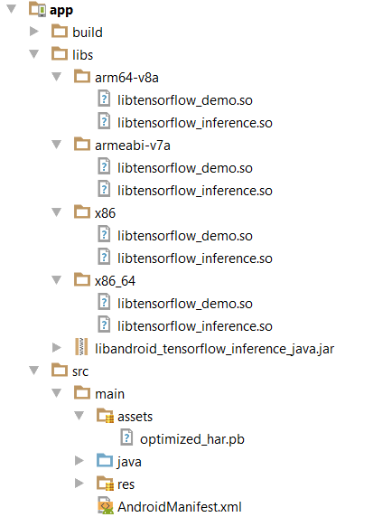
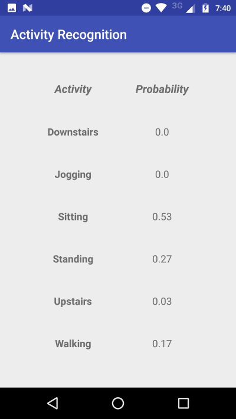

In this tutorial, we will learn how to deploy human activity recognition (HAR) model on Android device for real-time prediction. The majority of the code in this post is largely taken from Omid Alemi's simply elegant tutorial named "Build Your First Tensorflow Android App". This post could not have been possible without that, so here I am building upon Omid's work and we should thank him for his contribution. If you have not seen the post on how to build a deep convolutional neural network for HAR, please refer to this post. Here, details on how to freeze and export the model for use in Android app are discussed.
We need to have frozen Tensorflow graph with learned weights that will be imported into an Android app for making predictions using accelerometer data. Before proceeding further make sure, the model input and output nodes have given valid names. Another thing to notice is that the input shape of CNN model is 1 x 90 x 3 (i.e. height, width and channels). However, from Android, we will feed vector of size 270 (i.e. 90 x 3) that we can reshape in Tensorflow model. For doing this, the input node of shape (None, 270) will be added on top of earlier input node as follows:
X = tf.placeholder(tf.float32, shape=[None,input_width * num_channels], name="input")
X_reshaped = tf.reshape(X,[-1,1,90,3])
Now add following lines of code after model training steps to checkpoint and save the graph definition.
with tf.Session() as session:
/**
------- Model training code goes here ------
**/
tf.train.write_graph(session.graph_def, '.', '../har.pbtxt')
saver.save(session,save_path = "../har.ckpt")
Next, the checkpointed model will be frozen and its optimized version can be saved as follows:
from tensorflow.python.tools import freeze_graph
from tensorflow.python.tools import optimize_for_inference_lib
freeze_graph.freeze_graph(input_graph = "../har.pbtxt", input_saver = "",
input_binary = False, input_checkpoint = "../har.ckpt", output_node_names = "y_",
restore_op_name = "save/restore_all", filename_tensor_name = "save/Const:0",
output_graph = "frozen_har.pb", clear_devices = True, initializer_nodes = "")
input_graph_def = tf.GraphDef()
with tf.gfile.Open(output_frozen_graph_name, "r") as f:
data = f.read()
input_graph_def.ParseFromString(data)
output_graph_def = optimize_for_inference_lib.optimize_for_inference(
input_graph_def,
["input"],
["y_"],
tf.float32.as_datatype_enum)
f = tf.gfile.FastGFile("optimized_frozen_har.pb", "w")
f.write(output_graph_def.SerializeToString())
Let's make a simple Android app to get accelerometer data and make predictions about user activities with the learned model. Before doing so, get Tensorflow libraries for Android from the following link. For the purpose of this tutorial, I used the libraries with artifact number 117. Now, create an empty app and copy libandroid_tensorflow_inference_java.jar,arm64-v8a,armeabi-v7a,x86,x86_64 files/folders in libs directory of the project. Also, copy the frozen optimized model into an asset directory of the project. The figure shows directory structure after copying all the required files.

Afterwards, add following entry in build.gradle file to let build system know where files are located.
sourceSets{
main {
jniLibs.srcDirs = ['libs']
}
}Now we create a class, which will use TensorflowInferenceInterface for feeding data to a model, running inference and getting back results.
import android.content.Context;
import android.content.res.AssetManager;
import org.tensorflow.contrib.android.TensorFlowInferenceInterface;
public class ActivityInference {
static {
System.loadLibrary("tensorflow_inference");
}
private static ActivityInference activityInferenceInstance;
private TensorFlowInferenceInterface inferenceInterface;
private static final String MODEL_FILE = "file:///android_asset/optimized_har.pb";
private static final String INPUT_NODE = "input";
private static final String[] OUTPUT_NODES = {"y_"};
private static final String OUTPUT_NODE = "y_";
private static final long[] INPUT_SIZE = {1,270};
private static final int OUTPUT_SIZE = 6;
private static AssetManager assetManager;
public static ActivityInference getInstance(final Context context)
{
if (activityInferenceInstance == null)
{
activityInferenceInstance = new ActivityInference(context);
}
return activityInferenceInstance;
}
public ActivityInference(final Context context) {
this.assetManager = context.getAssets();
inferenceInterface = new TensorFlowInferenceInterface(assetManager, MODEL_FILE);
}
public float[] getActivityProb(float[] input_signal)
{
float[] result = new float[OUTPUT_SIZE];
inferenceInterface.feed(INPUT_NODE,input_signal,INPUT_SIZE);
inferenceInterface.run(OUTPUT_NODES);
inferenceInterface.fetch(OUTPUT_NODE,result);
//Downstairs Jogging Sitting Standing Upstairs Walking
return result;
}
}
The rest of the code provided below is from MainActivity class. It is listening to accelerometer sensor and using getActivityProb method of ActivityInference class for getting a probability of each class to update the UI.
import android.content.Context;
import android.hardware.Sensor;
import android.hardware.SensorEvent;
import android.hardware.SensorEventListener;
import android.hardware.SensorManager;
import android.os.Bundle;
import android.support.v7.app.AppCompatActivity;
import android.widget.TextView;
import java.math.BigDecimal;
import java.util.ArrayList;
import java.util.List;
public class MainActivity extends AppCompatActivity implements SensorEventListener {
private final int N_SAMPLES = 90;
private static List x;
private static List y;
private static List z;
private static List input_signal;
private SensorManager mSensorManager;
private Sensor mAccelerometer;
private ActivityInference activityInference;
private TextView downstairsTextView;
private TextView joggingTextView;
private TextView sittingTextView;
private TextView standingTextView;
private TextView upstairsTextView;
private TextView walkingTextView;
@Override
protected void onCreate(Bundle savedInstanceState) {
super.onCreate(savedInstanceState);
setContentView(R.layout.activity_main);
x = new ArrayList();
y = new ArrayList();
z = new ArrayList();
input_signal = new ArrayList();
downstairsTextView = (TextView)findViewById(R.id.downstairs_prob);
joggingTextView = (TextView)findViewById(R.id.jogging_prob);
sittingTextView = (TextView)findViewById(R.id.sitting_prob);
standingTextView = (TextView)findViewById(R.id.standing_prob);
upstairsTextView = (TextView)findViewById(R.id.upstairs_prob);
walkingTextView = (TextView)findViewById(R.id.walking_prob);
mSensorManager = (SensorManager) getSystemService(Context.SENSOR_SERVICE);
mAccelerometer = mSensorManager.getDefaultSensor(Sensor.TYPE_ACCELEROMETER);
mSensorManager.registerListener(this, mAccelerometer , SensorManager.SENSOR_DELAY_FASTEST);
activityInference = new ActivityInference(getApplicationContext());
}
protected void onPause() {
super.onPause();
mSensorManager.unregisterListener(this);
}
protected void onResume() {
super.onResume();
mSensorManager.registerListener(this, mAccelerometer, SensorManager.SENSOR_DELAY_FASTEST);
}
@Override
public void onSensorChanged(SensorEvent event) {
activityPrediction();
x.add(event.values[0]);
y.add(event.values[1]);
z.add(event.values[2]);
}
@Override
public void onAccuracyChanged(Sensor sensor, int i) {
}
private void activityPrediction()
{
if(x.size() == N_SAMPLES && y.size() == N_SAMPLES && z.size() == N_SAMPLES) {
// Copy all x,y and z values to one array of shape N_SAMPLES*3
input_signal.addAll(x); input_signal.addAll(y); input_signal.addAll(z);
// Perform inference using Tensorflow
float[] results = activityInference.getActivityProb(toFloatArray(input_signal));
downstairsTextView.setText(Float.toString(round(results[0],2)));
joggingTextView.setText(Float.toString(round(results[1],2)));
sittingTextView.setText(Float.toString(round(results[2],2)));
standingTextView.setText(Float.toString(round(results[3],2)));
upstairsTextView.setText(Float.toString(round(results[4],2)));
walkingTextView.setText(Float.toString(round(results[5],2)));
// Clear all the values
x.clear(); y.clear(); z.clear(); input_signal.clear();
}
}
private float[] toFloatArray(List list)
{
int i = 0;
float[] array = new float[list.size()];
for (Float f : list) {
array[i++] = (f != null ? f : Float.NaN);
}
return array;
}
public static float round(float d, int decimalPlace) {
BigDecimal bd = new BigDecimal(Float.toString(d));
bd = bd.setScale(decimalPlace, BigDecimal.ROUND_HALF_UP);
return bd.floatValue();
}
} This is all that we need to use Tensorflow on Android to make predictions about user activities. A simple app UI will look something as shown in the screenshot below.

The complete code of the app is available at the following link. If you have any question or face any issue, please comment below.